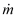

当 ContamX 执行模拟时，它会在存储项目文件的同一目录中创建一组结果文件。这些结果文件与项目文件具有相同的文件名，并附加不同的扩展名以指示结果文件的类型。下表列出了不同的文件扩展名并给出了文件的简要说明。下表提供了每个文件的详细信息。
| 扩展 | 类型 | 文件说明 |
| ACH | 文字 | 整个建筑换气率——分解为气流路径和通风系统组成部分的综合值。该文件可以包含每个时间步的结果和/或每日盒须结果。 |
| AGE | 文字 | 空气年龄 - 每个时间步长的每个房间的空气年龄结果和/或每日盒须结果。 |
| BAL | 文字 | 平衡 - 管道平衡计算的结果。 |
| CBW | 文字 | 污染物盒须结果 - 仅针对每日盒须结果创建。 |
| CEX | 文字 | 污染物渗漏结果。 |
| CSM | 文字 | 污染物源/汇总和 - 模拟期间由源/汇和过滤器生成和/或累积的污染物的总质量。 |
| EBW | 文字 | 乘员暴露结果 - 每个乘员在每个时间步长对每种污染物的平均暴露和/或每日盒须结果。 |
| LOG | 文字 | 控制日志文件 - 包含所有报告控制节点的输出。 |
| RST | 二进制 | 模拟重新启动文件 - 仅供 ContamX 在模拟中间几天开始时用于重新启动模拟。 |
| RXR | 二进制 | 短时间步仿真结果交叉参考数据 |
| RZF | 二进制 | 短时间步长模拟结果房间环境特性 |
| RZM | 二进制 | 短时间步长模拟结果房间质量分数 |
| RZ1 | 二进制 | 短时间步长模拟结果一维房间单元质量分数 |
| SIM | 二进制 | 详细的模拟结果 - 流路的气流速率和压差、气流节点的参考压力和温度以及每个时间步污染物节点的污染物浓度。这是使用 ContamW 生成和显示 SketchPad 结果和图表的文件。它也是可以生成导出和报告文件的文件。 |
| SQLITE3 | 二进制 | SQLite 数据库文件包含与 SIM 文件相同的数据。 |
| SRF | 文字 | 表面结果文件 - 包含源/汇的污染物浓度，其中包括可逆存储节点。 |
| VAL | 文字 | 模型“验证”测试结果文件 - 包含建筑气流测试或建筑增压测试气流模拟方法的结果。 |
< 项目名称 > .ACH - 整栋建筑换气率
换气率是根据从环境房间进入室内的气流速率的总和来计算的。 空调空间 建筑物的内部结构，包括管道和简单的空气处理器。结果是根据进入机械系统（管道和简单的AHS）的总流量、气流路径和所有流量的总量来呈现的。的 空调空间 包括所有机械系统音量以及您选择的那些房间的音量 包含在建筑体积中 （参见 房间数据 在 使用房间 部分）。
哪里
ACR = 整栋建筑换气率 [h -1]

= 进入调节空间的质量流量 [kg/s]rair = 进入空气的密度 [kg/m 3]
V 大楼 = 调节空间的体积 [m 3]
如果任何气流房间存在质量不平衡，ContamX 将生成一条警告消息，指示有问题的房间。
文件格式 （制表符分隔的文本） :
ACH 文件的第一行包含：
StartDate // 模拟的第一个日期 (mm/dd ® IX)
EndDate // 模拟的最后日期 (mm/dd ® IX)
SimStep // 模拟时间步长[s](IX)
achsave // 保存详细结果标志 [0/1] (IX)
abwsave // 保存盒须结果标志 [0/1] (IX)
Vcond // 条件空间的体积 [m^3] (R4)
如果 achsave 为 1，则为详细数据写入标题行：
“日 时间 路径 导管 总计”
如果 abwsave 为 1，则为每日盒须数据写入标题行：
“日间平均值 dev 最小值 最小值 最大值 最大值”
然后对于每一天
如果 achsave 为 1，则为一天的每个输出时间步写入一行数据：
日期 // 日期（月/日 ® IX)
时间 // 时间（时:分:秒 ® I4)
ACRpath // 通过流路的换气率 (R4)
ACRduct // 通过管道的换气率 (R4)
ACRtotal // ACRpath + ACRduct (R4)
如果 abwsave 为 1，则写入三行每日盒须数据 - 一行分别用于路径、管道和总计。每行包含：
日期 // 日期（月/日 ® IX)
输入//“路径”“管道”或“总计”
avg // 日平均值 (R4)
dev // 标准差 (R4)
tmin // min 发生的时间 (hh:mm:ss ® I4)
min // 当天的最小值 (R4)
tmax // 最大值发生的时间 (hh:mm:ss ® I4)
max // 一天的最大值 (R4)
最后：
如果 abwsave 为 1，则整个模拟的三行摘要盒须数据 - 一行分别用于路径、管道和总计。每行包含：
“最终”
输入//“路径”“管道”或“总计”
avg // 模拟平均值 (R4)
dev // sim 的标准偏差 (R4)
dmin // min 发生的日期 (mm/dd ® IX)
min // 模拟的最小值 (R4)
dmax // 最大值发生的日期 (mm/dd ® IX)
max // 模拟的最大值 (R4)
示例 文件 :
1/1 1/1 3600 1 0 847.44
day 时间 路径 导管 总计
1/1 01:00:00 2.911 0.010 2.921
1/1 02:00:00 2.932 0.098 3.030
< 项目名称 > .AGE——空气时代
房间空气的平均年龄是空气在房间内停留时间的指示。 ContamX 可以计算项目中所有房间的这些值，并以详细形式或盒须形式提供。 ContamX 使用 AIVC Technical 34 [ 中提出的方法计算这些值 1991年国际创业投资大会 ].
文件格式 （制表符分隔的文本） :
AGE 文件的第一行包含：
StartDate // 模拟的第一个日期 (mm/dd ® IX)
EndDate // 模拟的最后日期 (mm/dd ® IX)
SimStep // 模拟时间步长[s](IX)
zaasave // 保存详细的房间空气年龄结果标志 [0/1] (IX)
zbwsave // 保存盒须结果标志 [0/1] (IX)
如果 zaasave 为 1，则为详细数据写入标题行：
“白天” zone[] // …房间编号列表
如果 zbwsave 为 1，则为每日盒须数据写入标题行：
“日 区 avg dev min min max 最大”
然后对于每一天
如果zaasave为1，则一天的每个输出时间步写入一行数据：
日期 // 日期（月/日 ® IX)
时间 // 时间（时:分:秒 ® I4)
Age[] // 每个房间的空气年龄 [h]
如果 zbwsave 为 1，则为每个房间写入一行每日盒须数据。每行包含：
日期 // 日期（月/日 ® IX)
房间 // 房间编号 (IX)
avg // 日平均值 (R4)
dev // 标准差 (R4)
tmin // min 发生的时间 (hh:mm:ss ® I4)
min // 当天的最小值 (R4)
tmax // 最大值发生的时间 (hh:mm:ss ® I4)
max // 一天的最大值 (R4)
最后：
如果 zbwsave 为 1，则为整个模拟的每个房间写入一行摘要盒须数据。每行包含：
“最终”
房间 // 房间编号 (IX)
avg // 模拟平均值 (R4)
dev // sim 的标准偏差 (R4)
dmin // min 发生的日期 (mm/dd ® IX)
min // 模拟的最小值 (R4)
dmax // 最大值发生的日期 (mm/dd ® IX)
max // 模拟的最大值 (R4)
示例文件：
3 1/1 1/1 300 0 1
day 区 avg dev min min max max
1/1 1 1.000 0.000 00:05:00 1.000 00:05:00 1.000
1/1 2 2.000 0.000 00:05:00 2.000 00:05:00 2.000
1/1 3 3.000 0.000 00:05:00 3.000 00:05:00 3.000
决赛 1 1.000 0.000 1/1 1.000 1/1 1.000
决赛 2 2.000 0.000 1/1 2.000 1/1 2.000
决赛 3 3.000 0.000 1/1 3.000 1/1 3.000
< 项目名称 > .BAL - 管道平衡结果文件
该文件包含由 ContamX 执行的管道平衡操作的结果。它包含天平操作的状态以及详细结果和错误跟踪信息（如果需要）。
文件格式 （制表符分隔的文本） :
BAL 文件的第一行包含平衡过程的状态：
code //余额完成代码[0-5]（九）
!Message[] // 包含完成消息的注释 (I1)
接下来的两行是风扇和终端数据的标题：
!风机管道 # 流量 [kg/s] 奖品 [Pa] RPMratio
!trm jctn # 相对流 [-] Cb [-]
然后对于每个平衡终端和关联的风扇：
如果终端：
"trm" //表示终端数据
junc // 终点站的路口号 (IX)
rflow // 相对流量 Fbal/Fdes (R4)
Cb //平衡系数(R4)
如果是风扇：
"fan" //表示风扇数据
风道 // 风机风道段数(IX)
流量 // 总粉丝数 流量（R4）
奖品 // 风扇压力升高 (R4)
若风机性能曲线风机：
frpm // 达到平衡所需的转速比
// 设计风扇的流量 (R4)
最后一行正是：
end
示例 文件 :
0！流量平衡迭代收敛
!风机管道 # 流量 [kg/s] 奖品 [Pa] RPMratio
!trm jctn # 相对流 [-] Cb [-]
风扇 4 0.334472 68.0745
trm 1 1.000025 4.38419
trm 2 0.999974 4.2013
风扇 8 0.334472 107.938 0.78357
trm 11 1.000007 7.76847
12号 0.999991 7.58544
end
< 项目名称 > .CBW - 污染物盒晶须
该文件包含污染物的每日盒须结果和整个模拟期间的盒须结果摘要。显示项目文件中所有房间以及模拟的每种污染物的结果。
文件格式 ( 制表符分隔 文本） :
CBW 文件的第一行是描述文件中数据量的标头：
NumZones // 房间数量 (IX)
NumCont // 污染物数量 (IX)
StartDate // 模拟的第一个日期 (mm/dd ® IX)
EndDate // 模拟的最后日期 (mm/dd ® IX)
第二行是标题：
“日 区 ctm avg dev min min max 最大”
然后每天的盒须结果
对于每个房间
对于每种污染物：
日期 // 日期（月/日 ® IX)
房间 // 房间编号 (IX)
ctm // 污染物编号 (IX)
avg // 日平均值 (R4)
dev // 标准差 (R4)
min // 当天的最小值 (R4)
tmin // min 发生的时间 (hh:mm:ss ® I4)
max // 一天的最大值 (R4)
tmax // 最大值发生的时间 (hh:mm:ss ® I4)
在所有每日值之后是整个模拟的摘要
对于每个房间
对于每种污染物：
“最终”
房间 // 房间编号 (IX)
ctm // 污染物编号 (IX)
avg // 模拟平均值 (R4)
dev // sim 的标准偏差 (R4)
min // 模拟的最小值 (R4)
dmin // min 发生的日期 (mm/dd ® IX)
max // 模拟的最大值 (R4)
dmax // 最大值发生的日期 (mm/dd ® IX)
示例 文件 :
2 1 1/1 1/1
day 区 ctm avg dev min min max max
1/1 0 1 0.000e+000 0.000e+000 00:05:00 0.000e+000 00:05:00 0.000e+000
1/1 1 1 1.036e-004 0.000e+000 00:05:00 1.036e-004 00:05:00 1.036e-004
1/1 2 1 6.839e-005 4.049e-005 00:05:00 0.000e+000 24:00:00 1.019e-004
决赛 0 1 0.000e+000 0.000e+000 1/1 0.000e+000 1/1 0.000e+000
决赛 1 1 1.036e-004 0.000e+000 1/1 1.036e-004 1/1 1.036e-004
决赛 2 1 6.839e-005 4.049e-005 1/1 0.000e+000 1/1 1.019e-004
该文件包含在每个模拟时间步长期间离开建筑物的每种污染物的质量。
文件格式（制表符分隔文本）：
第一行提供项目的名称。
“项目：”项目名称[]
下一行提供标题。
“NCTM 单位”
下一行提供污染物的数量和质量单位。
nc // 污染物数量 (I4)
“kg” // 质量单位，千克
下一行是标题行。
“日期时间”
Continental_name[nc] // 每种污染物的名称 (I1)
对于每个时间步，输出一行包含：
日期 // 日期（月/日 ® IX)
时间 // 时间（时:分:秒 ® I4)
对于每种污染物：
Mass // 在时间步长 (R4) 期间离开环境的质量
最后一行提供了模拟期间离开建筑物的每种污染物的总质量。
TotalMass[nc] // 整个模拟周期 (R4)
示例文件：
项目：test-cex-a
NCTM 单位
2公斤
日期时间 CTM1 第 1 部分
1/1 01:00:00 3.00001e-001 1.49983e-010
1/1 02:00:00 3.00001e-001 1.49983e-010
. . .
1/1 24:00:00 3.00001e-001 1.49983e-010
总和 7.20003e+000 3.59958e-009
< 项目名称 >_< 污染物名称 > .CEX – 详细的污染物渗漏
这些文件提供了通过单独的流动路径、管道终端和连接到环境的管道泄漏以及每个简单的空气处理系统排气离开建筑物的单一污染物的量。为每种模拟污染物生成一个文件。
文件格式（制表符分隔文本）：
CEX 文件的第一行包含项目的名称。
项目名称[]
下一行是标题行。
“日期时间”
Continental_name[nc] // 每种污染物的名称 (I1)
文件的下一行提供一般文件信息。
npath // 环境连接数
cont_name // 该文件中污染物的名称
“kg”//质量单位
下一行是标题行。 第一列标题是日期/时间，后跟环境连接列表。连接由类型字符提供，后跟根据项目文件的项目编号。类型字符为：“p”= 气流路径，“t”= 风管终端，“l”= 风管泄漏，“a”= 空气处理系统排气（例如，p5 = SketchPad 上的气流路径 5）。
“日期时间”
connection[nconn] // 每个环境连接的标识符
对于每个时间步，输出一行包含：
日期 // 日期（月/日 ® IX)
时间 // 时间（时:分:秒 ® I4)
对于每个连接：
Mass // 在时间步 (R4) 期间通过给定连接退出的质量
示例文件：
项目：test-cex-a
npath ctm_name 单位
4 CTM1 公斤
日期时间 p1 p2 a1 t2
1/1 01:00:00 0.00000e+000 1.00000e-001 1.00000e-001 1.00000e-001
1/1 02:00:00 0.00000e+000 1.00000e-001 1.00000e-001 1.00000e-001
. . .
1/1 24:00:00 0.00000e+000 1.00000e-001 1.00000e-001 1.00000e-001
该文件包含与污染物模拟相关的摘要数据。每当执行瞬态污染物模拟时，ContamX 都会自动创建此文件。提供源/汇、过滤器和房间编号以供参考ContamW。该文件由六个部分组成：
污染物源/汇汇总 - 本节提供模拟期间每个源/汇产生、去除和存储的污染物的质量。
过滤器挑战总结 - 本节提供模拟期间每个过滤器暴露的污染物质量（上游挑战）。
过滤器加载摘要 - 本节提供模拟期间“加载”到每个过滤器上的污染物质量（不包括初始加载）。
过滤器突破总结 - 本节提供过滤器突破是否适用的指示。如果突破适用并发生，则提供突破发生的日期和时间以及突破效率，否则提供模拟结束时的效率。突破仅适用于提供非零突破效率的简单气体过滤器。
与环境的相互作用 - 本节提供了进入和离开建筑体积的每种污染物的质量，即那些被设置为包含在建筑体积中的污染物的质量。
模拟时间 - 本节提供有关模拟持续时间的信息。
文件格式 （制表符分隔的文本） :
CSM 文件的前两行显示 PRJ 文件名以及运行模拟的日期和时间：
“项目：” 文件路径[] // PRJ 文件的完整路径 (I1)
“时间：” 模拟时间[] // 模拟开始的 PC 时间 (I1)
-- 空行 --
接下来是模拟的污染物数量。
NumCont“污染物” // 污染物数量 (I4)
-- 空行 --
接下来是
污染物源/汇摘要部分
.
注意：仅当 PRJ 文件中存在源/汇时，才会显示以下部分。
源/汇部分的第一行是标题：
“污染物源/汇摘要。”
下一行包含源/汇的数量：
NumSS "source/sinks" // 源/汇数量(IX)
下一行是标题：
秒/秒# zn# 物种 释放 已删除 已存储 [公斤]
然后每个源/汇的一行数据：
SS号 // 源/汇编号 (IX)
类型[] // 源/汇类型 (I1)
姓名[] // 污染物名称 (I1)
房间编号 // 房间编号 (IX)
As // 沉积元件的表面积 [m^2] (R4)
多 // 乘数 (R4)
最小 // 位置坐标[m] (R4)
最大X值
伊敏
最大Y值
兹敏
最大Z值
质量相对值 // 质量释放(R4)
大众雷姆 // 移除的质量 [kg] (R4)
麻省理工学院 // 累积质量，包括之前的存储 (R4)
-- 空行 ---
接下来是
过滤挑战部分
.
注意：仅当 PRJ 文件中存在过滤器时，才会显示此部分。
该部分的第一行是标题：
“过滤器挑战摘要。”
下一行包含过滤器的数量：
NumFilt“过滤器” // 过滤器数量 (IX)
下一行是标题：
"path" Ctm[nc] "element" // Ctm[nc] 是污染物列表
// 其中 nc 是污染物数量。
然后每个过滤器有两行数据：
第一行是：
总编号 // 包含过滤器的流组件的数量
// 和指示类型的字母（p：路径，d：管道，t：术语）
MassUp[nc] // 每种污染物的挑战质量 [kg] (R4)
姓名[] // 过滤器元素名称 (I1)
第二行是：
"--" // 表示与之前的过滤器相同
MassDown[nc] // 每种污染物的未过滤质量 [kg] (R4)
“下游”//表示下游质量
-- 空行 --
接下来是
过滤器装载部分
.
注意：仅当 PRJ 文件中存在过滤器时，才会显示此部分。
该部分的第一行是标题：
“过滤器加载摘要。”
下一行包含过滤器的数量：
NumFilt // 过滤器数量 (IX)
下一行是标题：
“路径” Ctm[nc] “元素 ns” // Ctm[nc] 是污染物列表
// nc 是污染物的数量。
然后是每个过滤器的一行数据：
总编号 // 包含过滤器的流组件的数量
// 和指示类型的字母（p：路径，d：管道，t：终端）
MassLoad[nc] // 模拟期间过滤的质量 [kg] (R4)
Name[] // 过滤器元素名称（I1）
ns // 子元素数量，ns > 0 表示超级过滤器 (I4)
If ns> 0，然后是超级过滤器的每个子过滤器的一行数据：
"--" //表示子过滤器
MassLoad[nc] // 模拟期间过滤的质量 [kg] (R4)
姓名[] // 过滤器元素名称 (I1)
"0" // 零子元素 (I4)
-- 空行 --
接下来是
过滤突破部分
.
注意：仅当 PRJ 文件中存在过滤器时，才会显示此部分。
该部分的第一行是标题：
《过滤器突破总结》
下一行包含过滤器的数量：
NumFilt“过滤器” // 过滤器的数量 for which for
// 突破 是可能的，目前在 Simple
// 气体类型 (IX)
接下来的两行是标题：
“路径元素”
“污染物日期时间效率”
然后是每个过滤器的一行数据：
总编号
// 包含过滤器的流组件的数量
// 和指示类型的字母（p：路径，d：管道，t：终端）
姓名[] // 过滤器元素名称 (I1)
nc // 污染物数量 (I4)
然后是指定突破的每种污染物的一行数据。
每行包含：
"--" // 表示继续过滤
澳门电信[] // 污染物名称 (I1)
如果发生突破：
Date[] // 突破发生的日期 (MMMDD ® I4)
时间 // 突破发生的时间 (hh:mm:ss ® I4)
贝凯夫 //突破效率
如果没有发生突破：
"--" // 表示没有突破日期
"--" // 表示没有突破时间
eff // 模拟结束时的效率
-- 空行 --
接下来是
与环境部分的交互
.
该节的接下来两行是标题。他们正是：
“与环境的相互作用。”
“从流量到 [kg] 的污染物流量”
然后是每种污染物的一行数据：
澳门电信[] // 污染物名称 (I1)
质量来自 // 从环境房间进入的总质量 [kg] (R4)
质量至 // 离开环境房间的总质量 [kg] (R4)
-- 空行 --
最后一部分是 模拟时间段 :
它包含一个标题和三行数据：
“模拟时间：”
tsec“秒” // 模拟时间，以秒为单位 [s] (IX)
thr “小时”， // 模拟时间，以小时为单位 [h] (R4)
tday “天” // 模拟时间，以天为单位 [days] (R4)
示例文件：
项目：C:\CONTAM96\samples\.4\Filters\TestBK3.prj
时间：2005年7月18日星期一10:17:22
5 污染物
污染物源/汇摘要。
4 源/汇
s/s# 类型物种 zn# As mult Xmin Xmax Ymin Ymax Zmin Zmax 释放 移除 储存 [kg]
1ccf CO 3 0 1 0 0 0 0 0 0 7.20E-01 0.00E+00 0
2 兄弟 Cl2 3 0 1 0 0 0 0 0 0 1.00E-04 0.00E+00 0
4 drs Cl2 4 0 1 0 0 0 0 0 0 0.00E+00 1.04E-01 0
3 组 Cl2 4 1 1 0 0 0 0 0 0 8.66E-03 8.67E-03 1.23E-05
过滤器挑战摘要。
3 过滤器
路径 CO CO2 Cl2 第0.10部分 第1部分.00 元素
6p 1.164e-001 1.829e+000 2.361e-001 1.204e-001 1.204e-001 两者都
-- 6.215e-002 1.829e+000 1.079e-001 1.039e-001 7.389e-002 下游
1d 1.164e-001 1.829e+000 2.361e-001 1.204e-001 1.204e-001 MERV10
-- 1.164e-001 1.829e+000 2.361e-001 1.039e-001 7.389e-002 下游
2t 1.164e-001 1.829e+000 2.361e-001 1.039e-001 7.388e-002 GF0
-- 6.213e-002 1.829e+000 1.079e-001 1.039e-001 7.388e-002 下游
过滤器加载摘要。
3 过滤器
路径 CO CO2 Cl2 第0.10部分 第1部分.00 元素 ns
6p 5.427e-002 0.000e+000 1.282e-001 1.649e-002 4.652e-002 两者都 2
-- 0.000e+000 0.000e+000 0.000e+000 1.649e-002 4.652e-002 MERV10 0
-- 5.427e-002 0.000e+000 1.282e-001 0.000e+000 0.000e+000 GF0 0
1d 0.000e+000 0.000e+000 0.000e+000 1.648e-002 4.651e-002 MERV10 0
2t 5.427e-002 0.000e+000 1.282e-001 0.000e+000 0.000e+000 GF0 0
过滤器突破总结。
2 过滤器
路径 元素 nc
污染物 日期 时间 效率
6p 两者都 2
-- CO 1月1日 01:01:00 0.3
-- Cl2 1月1日 00:58:00 0.5
2t GF0 2
-- CO 1月1日 01:01:00 0.3
-- Cl2 1月1日 00:58:00 0.5
与环境的相互作用。
污染物 质量来自 质量至 [kg]
CO 0.000e+000 2.067e-001
CO2 0.000e+000 4.938e+000
Cl2 0.000e+000 3.011e-001
第0.10部分 0.000e+000 2.954e-001
第1部分.00 0.000e+000 2.414e-001
模拟时间：
7200 秒
2 小时
0.0833333 天
< 项目名称 > .EBW - 乘员暴露
只能针对瞬态污染物模拟计算乘员暴露量。乘员暴露量是根据房间（或使用 1D 房间时的房间单元）内的污染物浓度计算的 短时间步长 方法）由每个占用者占用。这些房间（或小区）是根据相关的占用时间表确定的。使用每个模拟时间步长期间乘员所暴露的污染物浓度的平均值，通过对浓度与时间进行积分来确定暴露程度。将所得积分除以输出时间步长，然后以 kg_cont/kg_air 为单位写入文件。
文件格式（制表符分隔文本）：
EBW 文件的第一行是描述文件中数据的标头：
NumExps // 曝光图标数量 (IX)
NumCont // 污染物数量 (IX)
StartDate // 模拟的第一个日期 (mm/dd ® IX)
EndDate // 模拟的最后日期 (mm/dd ® IX)
SimStep // 模拟时间步长[s](IX)
expsave //保存详细结果标志[0/1] (IX)
ebwsave // 保存盒须结果标志 [0/1] (IX)
If 扩展保存 为1，则为详细数据写入标题行：
“日 时间 澳门电信” 指数[] // exp[] 是曝光图标编号的列表
If 保存 为 1，则为每日盒须数据写入标题行：
“日 经验值 ctm avg dev min min max 最大”
然后对于每一天
If 扩展保存 为 1，则为每种污染物写入一行数据并输出一天的时间步长：
日期 // 日期（月/日 ® IX)
时间 // 时间（时:分:秒 ® I4)
指数[] // 每个exp图标的时间步长曝光[kg/kg]
If 保存 为1，则为每个曝光图标写入一行每日盒须数据：
日期 // 日期（月/日 ® IX)
exp // 曝光图标编号 (IX)
ctm // 污染物编号 (IX)
avg // 日平均值 (R4)
dev // 标准差 (R4)
tmin // min 发生的时间 (hh:mm:ss ® I4)
min // 当天的最小值 (R4)
tmax // 最大值发生的时间 (hh:mm:ss ® I4)
max // 一天的最大值 (R4)
最后：
If 保存 为 1 时，将为整个模拟的每个暴露图标和每种污染物写入一行总结盒须数据。每行包含：
“最终”
exp // 曝光图标编号 (IX)
ctm // 污染物数量 (IX)
avg // 模拟平均值 (R4)
dev // sim 的标准差 (R4)
最小 // min 发生的日期 (mm/dd ® IX)
min // 模拟的最小值 (R4)
最大直径 // 最大值发生的日期 (mm/dd ® IX)
max // 模拟最大值 (R4)
示例文件：
1 2 1/1 1/1 300 1 1
day 时间 ctm 1
day 经验值 ctm avg dev min min max max
1/1 01:00:00 1 2.811e-007
1/1 01:00:00 2 9.970e-008
1/1 02:00:00 1 2.571e-007
1/1 02:00:00 2 6.109e-008
1/1 1 1 3.021e-007 0.000e+000 02:00:00 2.571e-007 00:05:00 3.592e-007
1/1 1 2 1.061e-007 1.945e-008 02:00:00 6.109e-008 00:05:00 1.562e-007
决赛 1 1 3.021e-007 0.000e+000 1/1 2.571e-007 1/1 3.592e-007
决赛 1 2 1.061e-007 1.945e-008 1/1 6.109e-008 1/1 1.562e-007
< 项目名称 >.LOG
如果您执行瞬态仿真并实施 报告控制元素 ，ContamX 将在与项目文件相同的目录中创建一个文件，并附加项目文件的名称和 .LOG 扩展名（请参阅控制元素类型：报告值）。该文件将在每个 o 处包含一行数据 输出时间步长 以及每个信号值的列 报告控制元素 .
< 项目名称 > .RST - 模拟重启文件
重新启动是模拟正常初始化的替代方法。它包含所有气流和污染物节点的状态、所有流路的流速和压差、汇的污染物存储条件以及各种控制节点类型的信号值。状态数据将在模拟的所有日期的 24:00:00 存储。
文件格式（二进制）：
标头数据：
m[0] = 0L； /* TURBO C++ 弄乱了写入的第一个字节； */
m[1] = (I4)_nzone; /* 因此，发送 4 个未使用的字节。 */
m[2] = (I4)_npath;
m[3] = (I4)_nctm;
m[4] = (I4)_njct;
m[5] = (I4)_ndct;
m[6] = (I4)_ncss;
m[7] = (I4)_nctrl;
m[8] = (I4)_rcdat.date_0;
m[9] = (I4)_rcdat.date_1;
m[10] = (I4)_rSizeData;
m[11] =（未设置）
m[1] 到 m[7] 允许 ContamW 检查项目中的某些更改。
m[8] 和 m[9] 是向用户显示的日期限制。
m[11] 将允许读取文件中的所有日期——可用于创建可用日期的选择框。
重启数据：
对于所有 AF_NODE：
R8 T——温度
R8 P——压力
R8 M——质量
R4 Mf[_nctm] - 质量分数
对于所有 AF_PATH：
R8 Flow[0] - 主流量
R8 流量[1] - 二次流量
R8 dP——压降
对于CSS_DSC：
CSE_EDS (I4)pss- > local（存储为R4，仿真时转换为I4）
CSE_BLS (R4)pss- > 本地的
对于 CT_NODE：
SNSDAT：R4 旧签名
PICDAT：R4 oldsig、R4 oldr
HYSDAT：R4 旧签名
一维仿真结果（RXR、RZF、RZM 和 RZ1）
RXR 文件提供读取其他三个一维模拟结果文件所需的污染物、房间和单元的数量。可以使用 NIST 提供的实用程序分别显示一维模拟结果并将其转换为制表符分隔的文件：ContamRV 和 1DZRead。
这些文件要求使用不大于 4 字节的成员对齐（在 Visual C++ 下）来编译 ContamW 和 ContamX 中的结构。如果使用默认结构成员对齐方式（8 字节），则该文件不可读。
提供了日期和时间值，以便读取这些文件的程序可以确保它从正确的位置读取。 RXR 文件提供读取其他三个文件所需的污染物、房间和单元格的数量。
该文件的第一部分是：
24 // 标识符（对于 ContamX 2.4）(I4)
_time_list // 列出时间步长 [s](I4)
_date_0 // 模拟开始 - 一年中的某一天 (I4)
_time_0 // 模拟开始 - 一天中的时间 [s] (I4)
_date_1 // 模拟结束 - 一年中的某一天 (I4)
_time_1 // 模拟结束 - 一天中的时间 [s] (I4)
_urzf // 如果为 true，则创建 RZF 文件 (I4)
_urzm // 如果为 true，则创建 RZM 文件 (I4)
_urz1 // 如果为 true，则创建 RZ1 文件 (I4)
_nctm // 污染物数量 (I4)
_nzone // 房间数量（不包括环境）(I4)
_nZ1D // 一维房间的数量 (I4)
_nC1D // 一维房间 (I4) 中的单元总数
如果_nZ1D > 0，则为每个一维房间写入以下数据：
nr // ContamW 防区编号 (I4)
nc // 房间中的单元格数量 (I4)
X1 // 轴原点的 x 坐标 [m] (R4)
Y1 // 轴原点的 y 坐标 [m] (R4)
Z1 // 轴原点的 z 坐标 [m] (R4)
X2 // 轴末端的 x 坐标 [m] (R4)
Y2 // 轴末端的 y 坐标 [m] (R4)
Z2 // 轴末端的 z 坐标 [m] (R4)
对于每个时间步：
_dayofy // 一年中的第几天 [1 到 365] (I4)
_sim_time // 时间值 [s] [0 到 86400] (I4)
对于每个房间：
T // 温度 [K] (R4)
P // 表压 [Pa] (R4)
D // 密度 [kg/m3 3 ]（R4）
对于每个时间步：
_dayofy // 一年中的第几天 [1 到 365] (I4)
_sim_time // 时间值 [s] [0 到 86400] (I4)
对于每个房间：
CC[0] // 物质 0 的质量分数 [kg/kg] (R4)
...
CC[n] // 物质的质量分数 n [kg/kg] (R4)
对于每个时间步：
_dayofy // 一年中的第几天 [1 到 365] (I4)
_sim_time // 时间值 [s] [0 到 86400] (I4)
对于每个一维房间单元：
CC[0] // 物质 0 的质量分数 [kg/kg] (R4)
...
CC[n] // 物质的质量分数 n [kg/kg] (R4)
< 项目名称 > .SIM - 详细的仿真结果
SIM 文件是 ContamX 的主要结果文件，包含详细的气流和污染物结果。 ContamW 使用 SIM 文件中的数据在 SketchPad 上显示气流结果，在结果显示窗口中显示污染物浓度，创建导出和报告文件，以及生成瞬态模拟结果图表。输出是在每个 输出时间步长 。较短 输出时间步长 允许您更详细地查看结果，但会导致模拟结果文件更大。
该文件的格式与以前的版本相比略有修改，以适应更多的建筑组件（房间、路径、管道等）。这反映在从 I2 更改为 I4 的“nr”字段中。它仍然是一个二进制文件（与文本文件不同，不是“人类可读的”），与文本文件相比，它提供更快的访问速度和更小的文件大小。
几个后处理器程序可用 软件 工具 的部分 NIST 多房间建模网站 可用于读取 .SIM 文件并从中生成各种形式的输出。
仿真结果文件的前 16 行包含数据（32 位整数），以帮助确保结果适用于当前位于 ContamW 中的项目文件，并设置处理结果所需的数组大小。
24 // CONTAM 版本号 编号 (I4)
_nzone // 气流房间数量（不包括环境）(I4)
_npath // 气流路径数 (I4)
_nctm // 污染物数量 (I4)
_njct // 路口和终端数量 (I4)
_ndct // 管道段数 (I4)
_time_list // 列出时间步长 [s](I4)
_date_0 // 模拟开始 - 一年中的某一天 (I4)
_time_0 // 模拟开始 - 一天中的时间 (I4)
_date_1 // 模拟结束 - 一年中的某一天 (I4)
_time_1 // 模拟结束 - 一天中的时间 (I4)
_pfsave // 如果为 true，则写入路径流结果 (I4)
_zfsave // 如果为 true，则写入房间流结果 (I4)
_zcsave // 如果为 true，则写入房间污染结果 (I4)
_nafnd // 气流节点数（房间+交叉点）(I4)
_nccnd // 污染物节点数（房间+交叉点）(I4)
_nafpt // 气流路径数（路径+管道）(I4)
接下来是气流节点交叉引用数据的 _nafnd 行：
typ // 节点源 [房间、交汇点或终点站] (I4)
nr // 房间、交叉口或航站楼编号 (I4)
接下来的 _nafnd 行给出了污染物节点交叉引用数据：
typ // 节点源 [房间或交汇处] (I4)
nr // 房间、交叉口或航站楼编号 (I4)
接下来的 _nafpt 行给出了气流路径交叉引用数据：
typ // 路径源 [路径、管道或泄漏] (I4)
nr // 路径、管道或泄漏编号 (I4)
每天的模拟结果包括：
每个时间步长的结果包括：
一行时间和环境数据：
dayofy // 一年中的第几天 [1 到 365] (I2)
daytyp // 日期类型 [1 到 12] (I2)
sim_time // 时间值 [s] [0 到 86400] (I4)
Tambt // 环境温度 [k] (R4)
P // 大气压 [Pa] (R4)
Ws // 风速[米/秒] (R4)
Wd // 风角 [度] (R4)
CC[0] // 物质的环境质量分数 0 [kg/kg] (R4)
...
CC[n] // 物质的环境质量分数 n [kg/kg] (R4)
每个气流路径的一行数据：
nr // 路径号；用作支票 (I4)
dP // 路径上的压降 [Pa] (R4)
Flow0 //一次流量值[kg/s](R4)
Flow1 // 替代流量值 [kg/s] (R4)
每个气流节点的一行数据（不包括环境）：
nr // 节点号；用作支票 (I4)
T // 节点温度[K] (R4)
P // 节点参考压力[Pa] (R4)
D //节点空气密度[kg/m^3](R4)
每个污染物节点的一行数据（不包括环境）：
nr // 节点号；用作支票 (I4)
CC[0] // 物质 0 的质量分数 [kg/kg] (R4)
...
CC[n] // 物质的质量分数 n [kg/kg] (R4)
时间步数据后面是当天的摘要数据。
它以以下一行环境数据开始：
dayofy // 一年中的第几天 [1 到 365] (I2)
daytyp // 日期类型 [1 到 12] (I2)
Tamax // 最高环境温度 [k] (R4)
Tamin // 最低环境温度 [k] (R4)
Pavg // 平均气压 [Pa] (R4)
Wsmax //最大风速[米/秒](R4)
Wsavg // 平均风速[米/秒] (R4)
CC[0] // 物质 0 的最大环境质量分数 [kg/kg] (R4)
...
CC[n] // 物质 n 的最大环境质量分数 [kg/kg] (R4)
每个气流路径的一行数据：
nr // 路径号；用作支票 (I4)
dPmax // 路径上的最大压降 [Pa] (R4)
Flowmax //最大一次流量值[kg/s](R4)
0.0 // 占位符 (R4)
每个气流节点的一行数据（不包括环境）：
nr // 节点号；用作支票 (I4)
T // 节点温度[K] (R4)
P // 节点参考压力[Pa] (R4)
D //节点空气密度[kg/m^3](R4)
每个污染物节点的一行数据（不包括环境）：
nr // 节点号；用作支票 (I4)
CCmax[0] // 物质 0 的最大质量分数 [kg/kg] (R4)
...
CCmax[n] // 物质 n 的最大质量分数 [kg/kg]
程序员注意事项： 该文件要求 ContamW 和 ContamX 中的结构使用不大于 2 字节的成员对齐方式进行编译（在 Visual C++ 下）。如果使用默认的结构成员对齐方式，则该文件不可读。
< 项目文件 > .SQLITE3
SQLITE3 文件包含与 SIM 文件相同的信息，但采用 SQLite3 数据库格式，由以下表组成：SimInfo、Time、AmbientConditions、NodeZoneFlowData、NodeZoneCcData、NodeDuctFlowData、NodeDuctCcData、LinkPathData、LinkDuctInfo、LinkDuctData。可以使用类似的工具浏览和查询该文件 SQLite 数据库浏览器 .
< 项目文件 >.SRF
SRF 文件包含包含可逆存储节点的源/汇的污染物浓度。与大多数源/汇不同，它们为污染物方程系统提供了污染物节点。目前有两种类型：边界层扩散（BLS）和沉积/再悬浮（DVR）。 BLS 节点的单位为 kg 污染物/kg 表面，DVR 节点的单位为 kg/m 2.
表面结果文件 - 文件格式（制表符分隔文本）：
文件的第一行是提供 PRJ 文件名称的标头：
“项目：”文件[] // PRJ 文件名 (I1)
-- 空行 --
然后是标题行：
“nr 房间类型物种单位 痕量/非痕量”
然后对于每个表面节点：
来源 // 源/汇的数量 (IX)
区 // 源所在房间的数量 (IX)
类型[] // 源/汇类型 ("bls", "dvr") (I1)
species[] // 与源/汇相关的物种名称 (I1)
单位[] // 结果单位 (I1)
追踪[] // 源类型：“trace”、“non-trace”、“inactive”(I1)
-- 空行 --
然后是标题行：
“日期时间” < 类型+编号 > 对于每个源/汇
然后是每个列表时间步长的一行数据：
日期 // 日期（月/日）
时间 // 时间（时:分:秒）
conc[] // 每个表面节点的表面浓度 (R4)
< 项目文件 >.VAL
VAL 文件包含建筑气流测试或建筑加压测试气流模拟方法的结果。每次对项目文件执行这些测试之一时，都会创建或覆盖该文件，因此请务必重命名或复制要保留的任何文件。
如果您执行 建筑气流测试 计算时，写入该文件的数据将分为五个部分：建筑信息和 ACH、房间、交汇处、分类流量和体积。第一个和最后一个部分始终被写入，但其他三个部分由气流测试模拟方法的模拟输出参数控制。
建筑气流测试 - 文件格式（制表符分隔文本）：
文件的第一行是提供 PRJ 文件名称的标头：
“气流摘要”文件[] // PRJ 文件名 (I1)
-- 空行 --
天气状况部分：
“环境温度：” 坦姆布特 “C” // 环境温度[C] (R4)
“压力：” 巴巴 “啪” // 大气压 [Pa] (R4)
“风速：” 瓦斯帕德 “米/秒” // 风速 [米/秒] (R4)
“风向：” 目录 “度” // 风向 [度] (R4)
“时间：” 时间 日[] // 模拟时间 (hh:mm:ss ® I4) 星期几 (I1)
-- 空行 --
整个建筑换气率 - 从空调房间到非空调房间的总流量除以空调房间的总体积。换气率的计算公式为 ACH = F * 3600/(ZoneDensity * ZoneVol)。 ACH 可以根据分类流部分提供的数据计算：
“ACH 大楼：” ach // 建筑换气率 [1/小时] (R4)
-- 空行 --
房间部分：
仅当模拟输出参数 BldgFlowZ 等于 1 时，此部分才会写入文件。
"Zones: nZones "flows [ACH]"// 房间数 (I4) 加标头
数据头：
房间 C/U 供应 Ret/Exh OA 系统 OA 总循环总 P [Pa] T [C] 体积 [m^3]
每个房间的一行数据（不包括简单空气处理系统的隐式房间，即 cu = S) - 所有流量均以每小时换气次数提供，ACH [1/小时]：
nr // 防区编号 (I4)
cu // C：有条件的，U：无条件的，A：ambt，S：AHS
Qs // 从系统到房间的总送风量。
// 包括来自以下的流量：终端、简单 ahs、管道泄漏
// 和强制流动路径
奎雷克斯 // 从房间到系统的总回风+排气流量。
// 包括流向：终端、简单啊、管道泄漏
// 和强制流动路径
夸西斯 // 从系统到房间的室外总气流。
// 包括来自以下的流量：终端、简单 ahs、管道泄漏
// 和连接到 Ambt 的强制流动路径
夸托特 // 室外总进气量，包括所有路径（非强制流）
// 连接到环境：Qoasys + 直接渗透
环路 //“循环流量”所有流出房间的流量之和
// 包括流向：终端、简单啊、管道泄漏、
// 条件房间、非条件房间和 Ambt
P // 房间压力 = 绝对房间压力减去环境压力
// 参考标高处的压力
// 该区域位于哪个房间 [Pa]
T // 房间温度 [C]
V // 房间体积 [m 3]
-- 空行 --
交汇处部分：
仅当模拟输出参数 BldgFlowD 等于 1 时，此部分才会写入文件。
“交汇处：” 结直肠 // 路口数量 (I4)
数据头：
交界处J/T OA [%] 流量 [kg/s] P [Pa] T [C] 体积 [m^3]
每个路口的一行数据：
nr // 结点号 (I4)
jt // J：路口，T：终点站
poa // 室外空气百分比[%]
w // 气流速率 [kg/s]
P // 结压 [Pa]
T // 结温[C]
V // 结点体积 [m 3]
-- 空行 --
流量分类部分：
仅当模拟输出参数 BldgFlowC 等于 1 时，此部分才会写入文件。
“文件[]”.prj 的分类房间气流” // PRJ 文件名 (I1)
-- 空行 --
“房间：”nZones“流量[kg/s]” // 房间数 (I4) 加上标头
数据头：
“房间 C/U 体积 [m^3] 密度 [kg/m^3] fmTerm fmLeak fmAHS fmFan fmCzone fmUzone fmAmbt toTerm toLeak toAHS toFan toCzone toUzone toAmbt oaTerm oaLeak oaAHS oaFan"
每个房间的一行数据（不包括简单空气处理系统的隐式房间，即 cu = S) - 所有流量均以 kg/s 为单位：
nr // 防区编号 (I4)
cu // C：有条件的，U：无条件的，A：ambt，S：AHS
V
// 房间体积（A 的体积是总条件体积
// 包括房间、管道和简单 AHS) [m3]
巢穴 // 房间密度 [kg/m3]
弗姆特姆 // 从终端进入房间的气流速率
FFM泄漏 // 从管道泄漏进入房间的气流速率
FfmAHS // 从简单的 AHS 进入房间的气流速率
范范 // 从强制流元件进入房间的气流速率
碳化锌 // 从调节房间进入房间的气流速率
锌铀 // 从无条件房间进入房间的气流速率（Ambt 除外）
FFMAMBT // 从环境进入房间的气流速率（强制流除外）
至特姆 // 房间外到终端的气流速率
漏泄 // 管道泄漏房间外的气流速率
FtoAHS // 超出房间的气流速率为简单 AHS
飞凡 // 离开房间到强制流动元件的气流速率
碳化锌 // 从房间到调节房间的气流速率
FtoZnU // 从房间到无条件房间的气流速率（Ambt 除外）
至安布特 // 离开房间至 Ambt 的气流速率
福阿特姆 // 从终端进入房间的室外气流速率
泡沫泄漏 // 从管道泄漏进入房间的室外气流速率
福阿AHS // 从简单的 AHS 进入房间的室外气流速率
福范 // 从强制流动元件进入房间的室外气流速率
-- 空行 --
音量部分：
“卷：”
“条件区”
VZCm“m^3” // 调节区总体积 [m3]
VZCft“切割” // 调节房间总体积 [ft3]
“管道 & AHS（有条件）”
VDCm“m^3” // 系统总体积 [m3]
VDCft“cuft” // 系统总体积 [ft3]
“无条件房间”
VZUm“m^3” // 未调节房间总体积 [m3]
VZUft“cuft” // 未调节房间总体积 [ft3]
示例文件：
DEMO7_AirflowTest.prj 的气流摘要
环境温度： 20.00 C
压力： 101325.00 Pa
风速： 0.00 m/s
风向： 0.00 deg
时间： 00:00:00 周日
ACH 大楼： 0.450
房间： 5 流量 [ACH]
区 C/U 供应 回气/排气 办公自动化系统 总OA 循环 压力[帕] 温度 [C] 体积 [m^3]
1 C 0.78505 0 0.18038 0.18038 0.79 949.0 20.0 216.0
2 C 3.1401 0 0.7215 0.7215 3.14 949.0 20.0 54.0
3 C 1.5702 6.0457 0.36079 0.36079 7.85 949.0 20.0 108.0
4 C 9.4165 0 2.1636 2.1636 9.42 949.0 20.0 18.0
5 C 4.7083 0 1.0818 1.0818 4.71 949.0 20.0 36.0
路口： 12
交界处 J/T OA[%] 流量[千克/秒] 压力[帕] 温度 [C] 体积 [m^3]
1 T 23.0 0.056717 78.0 20.0 0.00
2 T 23.0 0.056715 63.3 20.0 0.01
3 T 23.0 0.056721 20.3 20.0 0.01
4 T 23.0 0.056692 0.0 20.0 0.01
5 T 100.0 0.065148 -0.0 20.0 0.00
6 J 23.0 0.28354 -0.2 20.0 0.11
7 J 23.0 0.28354 79.3 20.0 0.05
8 J 23.0 0.22682 64.5 20.0 0.06
9 J 23.0 0.17011 21.4 20.0 0.09
10 J 23.0 0.11338 1.1 20.0 0.07
11 T 0.0 0.21839 -880.2 20.0 0.04
12 T 23.0 0.056692 0.0 20.0 0.01
DEMO7 的分类房间气流_AirflowTest.prj
房间： 6 流量 [千克/秒]
区 C/U 体积 [m^3] 密度 [kg/m^3] 术语 泄漏 fmAHS 。 。 。漏水 oaAHS 阿凡
0 A 432.45 1.2041 0 0 0 . . . 0 0 0
1 C 216 1.2041 0.056717 0 0 . . . 0 0 0
2 C 54 1.2041 0.056715 0 0 . . . 0 0 0
3 C 108 1.2041 0.056721 0 0 . . . 0 0 0
4 C 18 1.2041 0.056692 0 0 . . . 0 0 0
5 C 36 1.2041 0.056692 0 0 . . . 0 0 0
卷：
调节区
432.00 m^3
15255.9 库夫特
管道 & AHS（有条件的）
0.45 m^3
15.8 库夫特
无条件房间
0.00 m^3
0.0 库夫特
建筑加压测试 - 文件格式（制表符分隔文本）：
文件的第一行是提供 PRJ 文件名称的标头：
“建筑加压测试”文件[] // PRJ 文件名 (I1)
-- 空行 --
“加压：”
测试 “啪” // 测试压力（R4）
测试 “在H20” // 正数 = > 加压
// 负数= > 减压
-- 空行 --
“质量流量：”
F “公斤/秒” // 获得测试压力（R4）所需的流量
F “公斤/小时”
F “短链FM”
-- 空行 --
“体积流量：”
Q “升/秒” // 获得测试压力（R4）所需的流量
Q “米^3/小时”
Q “cfm”
-- 空行 --
“环境条件：”
“压力”
帕姆布特 “啪” // 气压 (R4)
帕姆布特 “在.H2O”
「温度」
坦姆布特 “C” // 室外温度（R4）
坦姆布特 “F”
「空气密度」
达姆布特 “公斤/米^3” // 室外空气密度（R4）
达姆布特 “磅/英尺^3”
-- 空行 --
“卷：”
“条件区”
VZC “米^3” // 调节房间的总体积
VZC “卡夫特”
“管道 & AHS（有条件）”
VD “米^3” // 管道和 AHS 的总体积
VD “卡夫特”
“无条件房间”
VZU “米^3” // 调节房间的总体积
VZU “卡夫特”
-- 空行 --
“气流详细信息：”
“路径 Czone Uzone dP [Pa] [in.H2O] F [kg/s] [kg/h] [scfm] Q [L/s] [m^3/h] [cfm]”
每个流路的一行数据包含气流详细信息。所有流量和压差均为绝对值。如果测试是加压测试，则所有流量都是从调节房间流向非调节房间。如果是减压测试，则流量从未调节房间流向调节房间。
nr // 路径号
乔内 // 条件房间的数量
乌佐尼 // 无条件房间的数量
dP_Pa // 路径上的压力差 [Pa]
dP_iH20 // [in.H20]
F_kgs // 通过路径的质量流量 [kg/s]
F_kgh // [公斤/小时]
F_scfm // [scfm]
Q_Ls // 通过路径的体积流量 [L/s]
Q_m3h // [米^3/小时]
Q_cfm // [cfm]
示例文件：
Test2_BldgPress_Auto.prj 建筑加压测试
加压：
50.0 Pa
0.201 水分子
质量流量：
0.4674 公斤/秒
1683 公斤/小时
822.6 短链FM
体积流量：
388.2 L/s
1398 米^3/小时
822.6 cfm
环境条件：
压力
101320 Pa
29.920 水分子
温度
20 C
68 F
空气密度
1.2040 公斤/米^3
0.07517 磅/英尺^3
卷：
调节区
445.44 m^3
15730.6 库夫特
管道 & AHS（有条件的）
17.11 m^3
604.3 库夫特
无条件房间
384.89 m^3
13592.3 库夫特
气流详情：
路径 乔内 乌佐尼 dP [帕] [in.H2O] F [公斤/秒] [公斤/小时] [短链FM] Q [升/秒] [米^3/小时] [cfm]
3 4 1 49.95 0.2007 0.01077 38.78 18.95 0.008946 32.21 18.96
4 2 1 49.95 0.2007 0.009482 34.14 16.69 0.007875 28.35 16.69
5 3 1 49.95 0.2007 0.009482 34.14 16.69 0.007875 28.35 16.69
. . .
205 16 0 50.00 0.2009 0.009616 34.62 16.92 0.007987 28.75 16.92
206 16 0 50.00 0.2009 0.001923 6.924 3.384 0.001597 5.75 3.385
模拟引擎将在与 PRJ 文件相同的目录中生成基于文本的日志文件 .XLOG。该文件主要包含通常与大多数用户无关的模拟性能数据。但是，如果在模拟过程中遇到错误，该文件对于程序开发人员跟踪错误很有用。